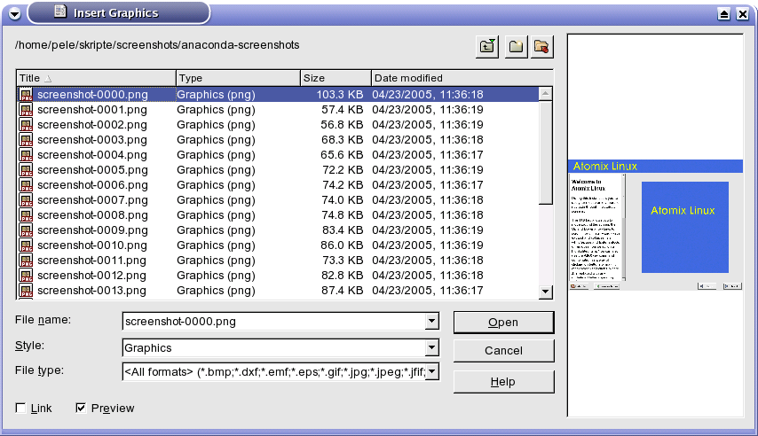

Slike u vaš dokument ubacujete preko padajućeg menija Insert / Graphic. Ili iz galerije slika.

From File
Ubaci postojeći dokument koji je snimljen negde na disku. I odaberete putanju i sliku koju želite da ubacite u vaš dokument.
Scaner
direktno sa skenera.
Gallery
Galeriju uklučujete, isključujete iz padajućeg menija Tools / Gallery ili sa trake standardnih alata. Slike iz galerije ubacujete u vaš dokument prevlačenjem na papir.